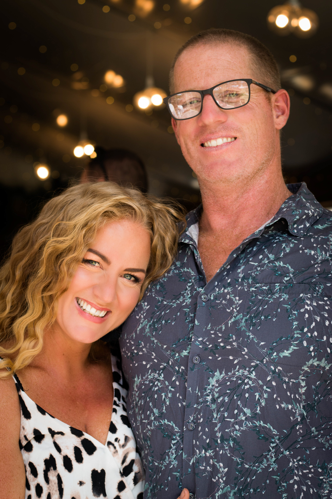

I'm so glad my work has caught your eye

I'm so glad my work has caught your eye
I’m an Adelaide commercial photographer, passionate about small business and big, beautiful content!
My aim is to capture your story, brand and passion, producing imagery that connects with your audience in a real and honest way.
I want to provide your business the opportunity to have fresh, relevant content for all your marketing media on a regular basis (most of my clients book monthly shoots) and to do this in a way that is cost effective, accessible and manageable for you and your business.
I can honestly say that I love what I do, and I’m inspired daily by the people I work with.
So, what about you? What are you looking for in a photographer?
Mercy Me Marketing
Mercy Me Marketing
We’ve been working with Elissa for over a year and we couldn’t be more impressed with her photography skills, eye for creativity and dynamic personality.
Elissa is a partnered photographer for our advertising agency, Mercy Me Marketing, and we use her across a variety of client shoots. From food to lifestyle she delivers a fantastic finished product.
Always receiving ample quality images from our photoshoot to cover our social media content for the entire month.
It’s so important to have strong visuals, and Elissa’s photography is always well received no matter who the audience is.
Harcourts Wine Coast

Harcourts Wine Coast
Elissa and I have worked together on numerous real estate projects over the last 12 months.
Her eye for detail produces unique, artistic images. This has allowed me to offer my clients a broader, more customizable range of options for the various media marketing platforms we use.
Nothing has ever been too much trouble and I always look forward to spending time collaborating with Elissa.